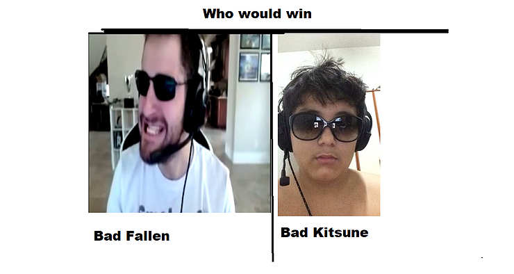

BadKitsune
O Bad Kitsune é uma evolução dos Gordumis kitsunus, mas agora eles estão estilo Bad Fallen, ou até melhor, essa nova evolução da sinais de maior nivel de agressividade, usando arma como nova e mac10, agora eles não precisão hibernar, agora eles tem que rushar que nem loucos.
